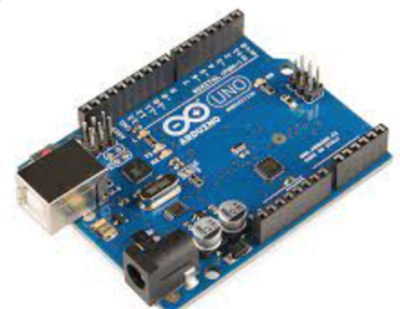

Arduino is a part of a circuit that controls what devices that connects to it ,it is like a brain of the circuit
It operate base on the program it was set by the creator, it uses c++ program.
To import the code into Arduino ,you will have to download a software ,link:https://support.arduino.cc/hc/en-us/articles/360019833020-Download-and-install-Arduino-IDE
Thinkercad is a good website to visit for you to test out your circuit there, it have wires and devices for you to use, you can try your program there.
Link:https://www.tinkercad.com/dashboard
Exercise 14-16
These are a few example what Adruino are capable of,you can go to the link to try out (https://www.tinkercad.com/things/jdEYJ4OVcVi?sharecode=S_IULiJvg-g6i2fNBd9_miR_MuJriKBpo2bZS-sYOA0)